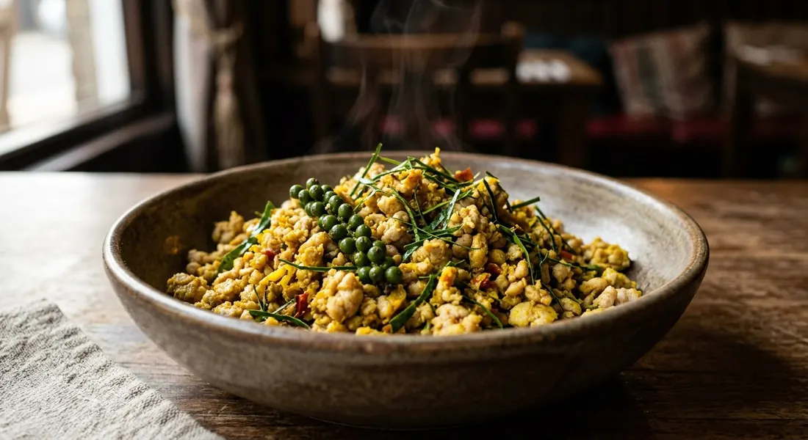

Turmeric-yellow curry paste fried bone-dry with minced pork, fresh green peppercorns and shredded kaffir lime — hot, fragrant, and the first southern dish every Thai names.

คั่วกลิ้ง takes its name from the pan. As Kapook's southern cook ตะโก tells it, the paste is dry-fried — คั่ว — until the meat กลิ้ง, rolls, on top of the wok, and only then is it done. There is no sauce, no coconut, no broth: the paste clings to every shred of meat like a dark yellow crust, and the dish leaves the wok almost dry.
And the colour is law. คั่วกลิ้งต้องสีเหลืองเท่านั้น — kua kling must be yellow, and yellow only; if yours comes out red, orange or green, ตะโก rules it out as not the real thing. The yellow is fresh turmeric, pounded into the paste — the same fresh turmeric TrueID's recipe slices into the wok itself. It is also, per TrueID's guide to southern food, the dish Thais think of first when southern food comes up: southern curry paste fried with fatty minced pork, eaten with hot rice, and chased with fresh vegetables.
The classic build is quick and brutal. The paste — fresh chillies, shallots, garlic, lemongrass, galangal, kaffir zest, peppercorns, shrimp paste and turmeric — is fried until fragrant and dry, the minced pork goes in and is fried without stopping, and the dish finishes off the heat with green peppercorns and shredded kaffir leaves so their perfume survives. At the end, the scrapings at the bottom of the pan, sticky with toasted paste, are stirred into a spoonful of rice — ตะโก calls the pan-bottom his prize, ข้าวคลุกก้นกระทะ.
| Thai | English | Amount |
|---|---|---|
| หมูเนื้อแดงสับ | Minced lean pork | 200 g |
| น้ำพริกคั่วกลิ้ง | Kua kling curry paste | 2 tbsp (more for hotter) |
| กะปิ | Shrimp paste | ½ tsp |
| น้ำตาลปี๊บ | Palm sugar | ½ tsp |
| น้ำปลา | Fish sauce | to season |
| น้ำมันพืช | Vegetable oil | for frying |
| ใบมะกรูดซอย | Kaffir lime leaves, finely shredded | 6 leaves |
| พริกไทยอ่อน | Fresh green peppercorns | 1 sprig |
The fresh paste (ตะโก, Kapook): fresh chillies, fresh long pepper (ดีปลี), shallots, garlic, lemongrass, kaffir lime zest, galangal, black peppercorns, shrimp paste and turmeric — blended with a little water until fine. The quick version (Wongnai): 250 g minced pork with 1½ tbsp shop paste, 1 tbsp sliced lemongrass, 1 large red spur chilli, 1 tbsp shredded kaffir leaves, 1 tbsp green peppercorns, fish sauce and seasoning powder, fried in rice bran oil with 3 tbsp water. The vegetable version (TrueID, จรรยา เลิศพงษ์ไทย): 200 g pork, 50 g southern paste, 100 g pea aubergines, 30 g fresh turmeric sliced diagonally, 20 pounded peppercorns, 4 sprigs green peppercorns, 4 kaffir leaves, salt and seasoning powder — turmeric slices go in half early, half late. The bold version (Aroifin): a full tablespoon of shrimp paste, sugar and a whisper of MSG.
Pork first or paste first. Kapook fries the minced pork until almost cooked before the paste goes in; Wongnai, Aroifin and TrueID fry the paste in the oil first, then add the pork. Both schools end dry — the difference is whether the paste ever gets a naked fry.
How much shrimp paste. Aroifin stirs in a full tablespoon. Kapook uses half a teaspoon and warns you to taste the shop paste first because brands salt differently. Wongnai skips the kapi entirely and seasons with fish sauce and seasoning powder instead. The fresh-paste recipes (Kapook's chicken version, ตะโก's fish version) build the kapi into the paste itself.
Turmeric: inside or on top. Everyone agrees the yellow must be fresh turmeric, but TrueID slices it into the wok as a vegetable — half early, half near the end — while the other recipes grind it into the paste only.
Vegetables in or beside. TrueID fries 100 g of pea aubergines into the pork. Kapook and Wongnai keep vegetables out of the wok entirely and serve them fresh alongside — cucumber and greens as the heat-breaker.
Shop paste or pounded. Wongnai and Aroifin are explicit store-paste recipes — a good น้ำพริกคั่วกลิ้ง does the work. Kapook's chicken variant (from Pantip member Angelisa) pounds chillies, shallots, garlic, lemongrass and turmeric at home, and ตะโก's fish version adds fresh long pepper, galangal and kaffir zest to the mortar.
The meat. Pork mince is the default everywhere. But ตะโก's kua kling is fish — yellow-spotted trevally, skin on, cut in chunks — and he notes mackerel, tuna and red fish all work. The name, the paste and the dry fry stay the same.
This recipe is translated from the following Thai-language sources. Where they disagree, we've said so.
1. Kapook — "4 เมนูคั่วกลิ้ง อาหารใต้อร่อยได้หลากหลายไม่ใช่แค่หมู" (the pork recipe used here, plus the chicken and tuna variants) — cooking.kapook.com
2. Kapook — "คั่วกลิ้งปลา อาหารใต้รสเผ็ดกลิ่นหอมพ่วงสูตรน้ำพริกแกงคั่ว" by ตะโก (the fresh paste, the yellow-only rule, the rolling name and the pan-bottom rice) — cooking.kapook.com
3. Wongnai — "วิธีทำ 'คั่วกลิ้งหมู' เมนูอาหารใต้รสเผ็ดร้อน เด็ดจนตักไม่หยุด!" (the quick store-paste version) — wongnai.com
4. TrueID Food — "คั่วกลิ้งหมูฟีเจอริงกับมะเขือพวง" by จรรยา เลิศพงษ์ไทย (the pea aubergine and fresh turmeric version) — food.trueid.net
5. TrueID Food — "อาหารใต้มีอะไรบ้าง? ทำความรู้จัก 16 เมนูอาหารใต้ เข้มข้นถึงใจ หร่อยจังฮู้!" (kua kling as the first southern dish everyone names) — food.trueid.net
6. Aroifin — "วิธีทำ คั่วกลิ้งหมู สูตรปักษ์ใต้แท้ เผ็ดแห้งถึงเครื่อง ทำง่าย" (the bold shrimp-paste version) — aroifin.com